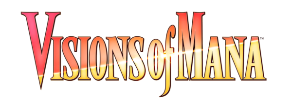

Visions of Mana

| Release Date: | August 29th, 2024 |
| Genre: | Adventure RPG |
| Developer: | Square Enix |
| Platform: | Platstation, Xbox, and PC |
| Details: | Website |
Visions of Mana is (at the time of writing) the latest entry to Square Enix's Mana series. This game follows the story of Val, the newly appointed soul guard and his adventure alongside the Alms of the world towards the Tree of Mana to revitalize the flow of mana in the world. I originally saw this game when it was first announced during the 2023 Game Awards and the art style and combat caught my eye as something that I might enjoy. Took a while to get around to the game, but it was a pleasant experience to start off 2025.
Story & Worldbuilding
The story was the central focus of the game, as is normal for these standard RPG games. They introduce you to the world rather well, giving you enough information to understand the world's setting and to begin formulating questions about it. They don't answer these, but have you experience what has been the status quo for years through the eyes of those partaking on the quadrennial pilgrimage to the Mana Tree. It was a great start! It had me thinking about what's to come, theorizing what could be happening next and it was exciting! Just, those overarching questions didn't get addressed for a long time, and that theorizing fizzled out into focusing on the task at hand. There were ups and downs throughout the story, but never seemed to recapture that high, as it turn into a more standard JRPG story. Not that it was bad, but didn't capture my imagination as much as it began.
There's a lot of cutscenes throughout the game, and their quality differs a lot amongst them. There are a number of cutscenes that are pre-rendered for important story beats, and those were great and engaging. The smaller ones done in-game were, not so much... There was a severe lack of expression from the characters that really sucked the immersion from the world. They had a set handful of animations they'd play, so they'd be moving sometimes, but their faces seemed to never match the emotions intertwined in their voice. There was one scene that was at the climax of one of the arcs, and the character didn't even open their mouth for their scream. It felt, lazy. In what should be the most important aspect of the game, the story's presentation, felt like it didn't get the polish that it needed to really shine.
Speaking of the game's immersion, there was one part of the game that was so jarring to me that I wrote it down to remember for now. Early on in the game, you board a boat to travel to another continent to progress your pilgrimage. While aboard the boat, something felt, off when walking around its deck. Took me a bit to figure out what it was, but it was the lack of motion for the boat itself. You'd expect when on the open sea, the boat to sway up and down with the waves, or for the water itself to move in some fashion. Instead, it felt like they made a flat room of water, and stuck a boat in the middle of it. No wind, no waves, nothing. It's a minor thing for a minor point in the game, but it stuck with me and just another instance where the game felt lazy in its presentation.
Gameplay
Between the cutscenes of the story, there's a lot of exploring and fighting to do around the world. The game rewards you a lot with exploring, as it quite accessible in terms of completion. From the get-go, the map of the current area marks the locations for all chests and elementite you can obtain, so you don't have to comb every nook and cranny to ensure you get all the treasure. There are also various "nemesis"enemies that are stronger variants with additional abilities to fight, which give you additional rewards upon defeating them. There's also combat challenges for the different elemental types, just there's a lot to explore whenever you reach a new area to explore! It also encourages you to revisit the area a lot as you progress through the game, as some areas or monsters will only be possible to access when you unlock more elements for the party.
Outside of the exploration areas, there's plenty of settlements across the world to interact with the people of the world and take on various side quests throughout your adventure. A lot of these are just basic side quests, of fetching an item or defeating specific enemies, but there are a couple of interesting ones that take place over the course of the entire game. Those ones were fun to do as it was a small side story disconnected from the pilgrimage and was nice to see them wrap up at the end. Just, there's only like, 4 of those quests. The rest felt like chores, which isn't unusual, but the sheer number of them was a bit much. Some evening I barely made any story progress simply due to how many side quests there were. Definitely a me problem by being the completionist that I am, but would've been nice for them to have a bit more variety.
The encouragement in exploration is nice, giving you a reason to spend time in these areas. The combat adds to this, giving breaks throughout exploring the area to dispatch with the monsters of the land. This game has real-time combat, so you're moving around an area attacking these enemies and avoid their own attacks. In terms of actions you can do during combat, there isn't much to it. You have normal and special attacks, which felt like light and heavy attacks for most characters, and access to a set of skills you've obtained from your elemental progression. These can range from buffs, healing, magical attacks, really anything that wasn't your normal attacks. I found using these skills to be a bit cumbersome, as I didn't really use the shortcut wheel and I didn't want to have to navigate a menu to perform my attacks, so I focused on just using normal attacks. It worked, but the fights got stale over time as it was just mash attack till their health reached zero. Eventually it got to the point of avoiding fights altogether, as they'd take up time and I also became absurdly overleveled by the end of the game.
Visuals and Audio
I gotta say, the visual and audio teams for this game pulled so much weight here. There's not too much variety of music in this game, but the music that is here is phenomenal. Each track perfectly fits their environment, and is the perfect style for this fantasy world. I can easily see myself using these tracks in my own Dungeons and Dragons campaign as background music for some areas, and they're just perfect for that setting. The visual style is also fantastic, as I'm a bit of a sucker for the anime-like artstyle, so seeing that in a 3D environment is just a treat. They did a great job in making a contrast between areas that have fallen into disarray and those thriving with their use of colors. Those in bleak states have this dark tone and a lack of color, which makes sense due to their lack of mana. Others with a flow of mana have bright, vivid colors, giving a warm feeling to the environment just from looking at it.
Overall Thoughts
This game was fun to play, but was quite a bit longer than I was expecting it to be. I enjoyed quite a few aspects of it, exploring and uncovering the secrets and reasons behind the state of the world. Just some things dragged it down and was beginning to overstay its welcome. It probably would've helped to break the game up into chunks, and take breaks from it to preserve the fun I've had with it. However, that wouldn't have resolved the lazy feeling I was getting from quite a bit of cutscenes, those really did feel underbaked. Overall, this felt like a really standard JRPG experience. It's enjoyable and brings a number of fun aspects to the table for a new adventure, but doesn't do anything really that special that sets it apart from other JRPGs. It's probably a game that won't revisit or recommend to people that often, but I don't regret the time I spent here. It was fun, enjoyable experience, and I'm ready to play something new.